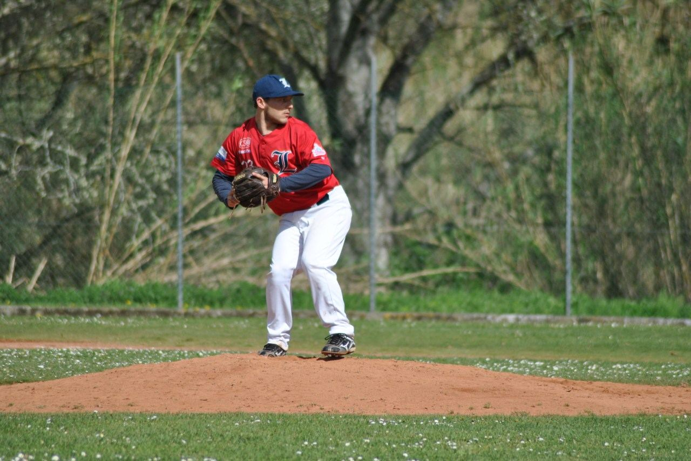

Come previsto alla vigilia le gare in programma domenica 13 Maggio per la sesta giornata di andata si sono dimostrate un bel duello tra la capolista Lancers e la squadra di casa del Longbridge 2000, salda al secondo posto della classifica.
Finisce con un pareggio la doppia sfida tra due formazioni che hanno messo in campo un buon baseball confermando i risultati finora ottenuti; pareggio che sorride ad entrambe in termini di classifica considerando che gli Yankees di San Giovanni cedono una gara ad un rinvigorito Chieti.
Degl’Innocenti resta il partente designato per la gara del mattino supportato dalla difesa “tipo” che ha caratterizzato le ultime uscite, ancora fuori per infortunio Albano, Menoni, Bini e Canò.
Il lineup del Longbridge vede bene i lanci del lanciatore ospite e concretizza subito alla prima occasione, seguono altri punti al terzo e quarto inning per il momentaneo 7 a 0, al quinto Pistol sostituisce Degl’innocenti sul monte.
La squadra lastrigiana fatica a trovare una reazione e i pochi corridori che arrivano in base non vengono spinti a punto, parte del merito va attribuito all’ottima prestazione del pitcher avversario.
Alla settima ripresa, sul punteggio di 9 a 0 a favore del Longbridge, i Lancers accorciano il divario segnando due punti grazie alla potente battuta di Ortiz; altri tre corridori avanzano verso la casa base all’ottava ripresa sui rilievi bolognesi ma non basteranno a preoccupare la squadra di casa che nel frattempo ha segnato il decimo e ultimo punto.
Gara 1 termina con la vittoria per 10 a 5 a favore della squadra di Casteldebole che, grazie a questo successo, si porta ad un passo dalla prima posizione in classifica.

La partita pomeridiana è affidata alle esperte mani di Morese, la formazione difensiva resta quasi totalmente la stessa del mattino ad eccezione di Nerbini sostituito da Degl’Innocenti.
Il Longbridge si rende subito pericoloso segnando ancora una volta al primo attacco, la reazione dei Lancers non tarda ad arrivare al secondo inning con i punti del pareggio e sorpasso.
Il lineup bolognese non si arrende e al terzo confeziona il punto del momentaneo 2 a 2, Morese prende a questo punto mette in campo l’esperienza da veterano che lo contraddistingue e frena letteralmente l’avanzata emiliana.
L’attacco dei Lancieri fatica ancora a concretizzare il vantaggio, la fortuna non aiuta le mazze dei lastrigiani che vedono alcune ottime battute direttamente nei guantoni avversari; occorre arrivare al sesto inning per segnare il punto del vantaggio ottenuto da Parrini su un errore della difesa avversaria, decisamente più fallosa del mattino.
Per quattro inning Morese concede poco o nulla al Longbridge, merito anche di una difesa attenta e precisa che confeziona ben due doppi giochi fondamentali; al nono gli out decisivi arrivano su una rimbalzante su gli interni, uno strike out e una bellissima presa al volo all’esterno destro di un inarrestabile Degl’Innocenti.
Questa presa, che ai più può sembrare come tante altre, per noi è il simbolo di questa squadra che nelle ultime settimane sta ottenendo risultati incredibili nonostante le mille difficoltà; grazie al sacrificio del singolo giocatore abbiamo fatto, e possiamo fare, grandi cose.
Il cammino è ancora lungo e lo staff tecnico resta ben saldo con i piedi per terra, ogni allenamento è programmato per migliorare i difetti visti in campo ed in previsione della domenica successiva.
Domenica la terza trasferta consecutiva, questa volta con gli Yankees di San Giovanni, altra squadra che occupa la parte alta della classifica; sarà un’altra grande sfida per i ragazzi di Rosellini & C.
LE ALTRE CATEGORIE
Serie C fermata dal maltempo nella sfida casalinga con l’Arezzo, gara rinviata a data da destinarsi. Sconfitta per i ragazzi a gli ordini di Acciai nel campionato Under 15 che a Sesto Fiorentino cedono con il risultato di 18 a 4.
Doppio successo per i Lancierini di Fedi e Lopez che a Capannori si impongono prima per 12 a 4 sul Lucca e poi per un perentorio 17 a 0 sul Siena.